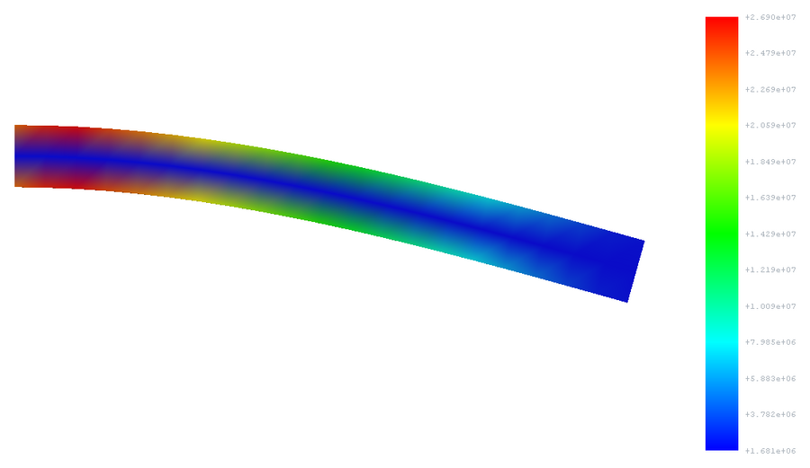
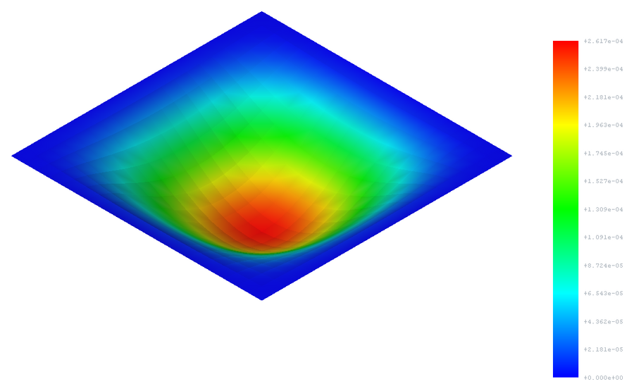
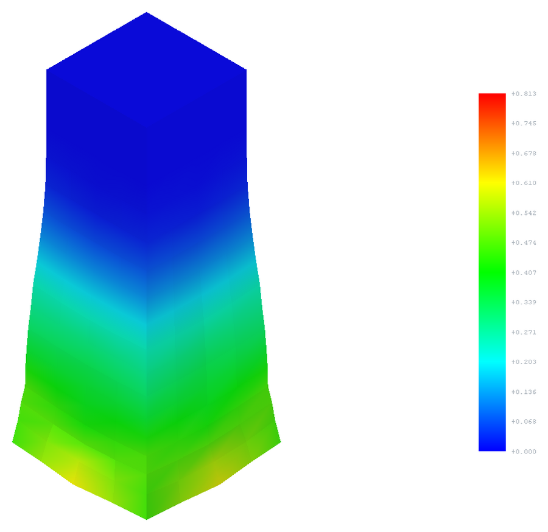
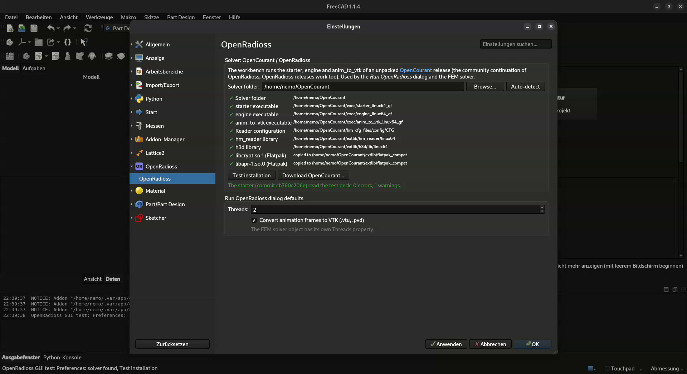
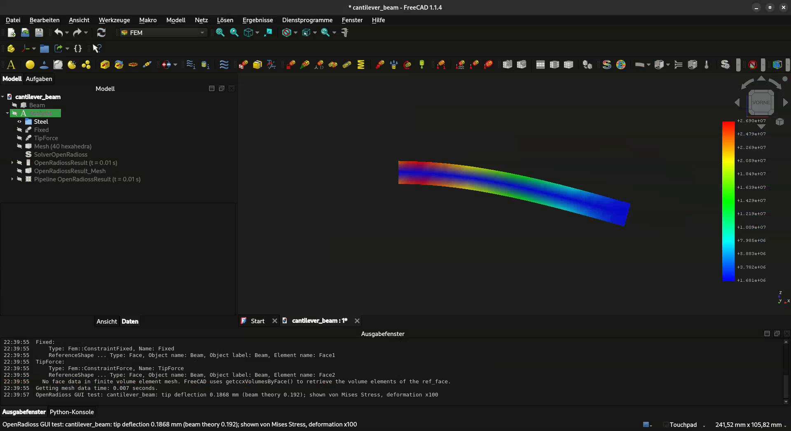
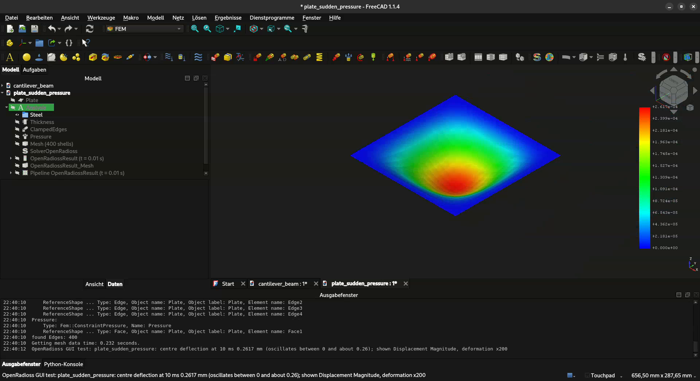
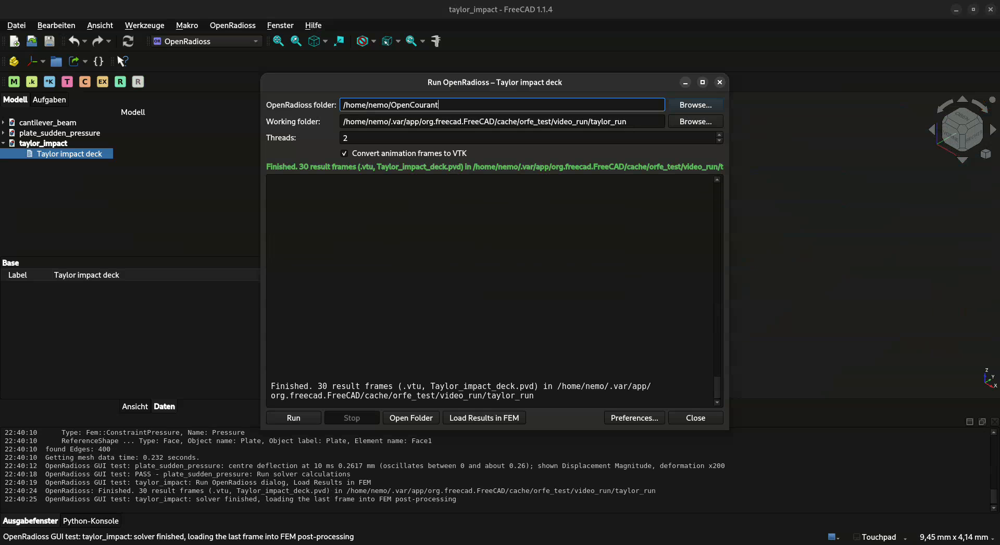
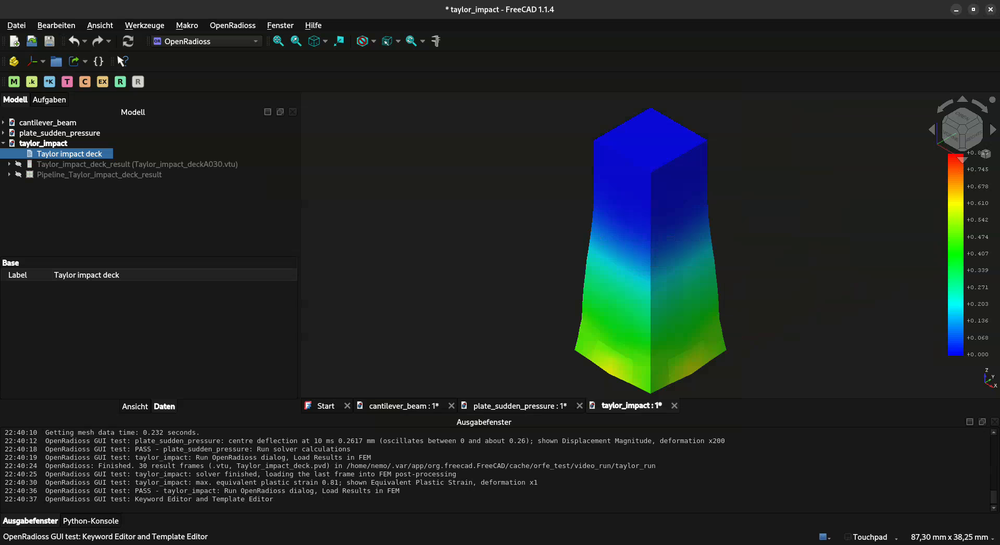
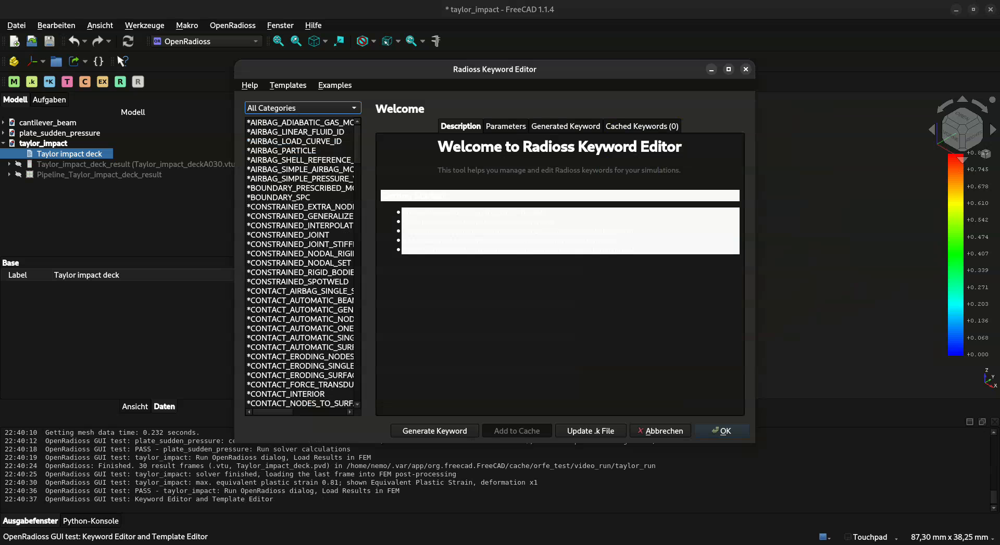

Crash, impact and sudden loads in FreeCAD
FC_OpenCourant connects FreeCAD with OpenCourant, the free explicit solver that continues OpenRadioss. Set up a FEM analysis as usual, or write an LS-DYNA keyword deck, and solve it explicitly, without leaving FreeCAD.
What you get
A FEM workbench solver
Solver OpenRadioss sits next to CalculiX and Elmer. Mesh, material, constraints, then click Run solver calculations. The results come back as normal FEM results.
A keyword deck workbench
Keyword Editor with 219 keywords, templates and a run dialog with a live log. For everything the FEM translation does not cover: contact, plasticity, rigid walls, initial velocities.
One-click solver set-up
Edit → Preferences → OpenRadioss downloads OpenCourant, checks all requirements and runs a test deck.
See it run
The automated GUI test in FreeCAD 1.1.4: preferences check, a cantilever and a plate in the FEM workbench, and a Taylor impact keyword deck. No sound.
Install and test in 4 steps
Install FreeCAD 1.0 or newer
From freecad.org, or with one command:
Linux
flatpak install flathub org.freecad.FreeCADWindows
winget install --id FreeCAD.FreeCADmacOS
brew install --cask freecadInstall the workbench
In FreeCAD open View → Panels → Python console, paste this, press Enter and restart FreeCAD. It works on every system, and running it again updates the workbench.
import FreeCAD, os, io, shutil, zipfile, urllib.request mod = os.path.join(FreeCAD.getUserAppDataDir(), "Mod"); target = os.path.join(mod, "FC_OpenCourant") data = urllib.request.urlopen("https://github.com/CalzitPLA/FC_OpenCourant/archive/refs/heads/main.zip").read() shutil.rmtree(target, ignore_errors=True); zipfile.ZipFile(io.BytesIO(data)).extractall(mod) os.rename(os.path.join(mod, "FC_OpenCourant-main"), target); print("Installed to", target, "- restart FreeCAD, then see TESTING.md")Prefer git?
Clone into FreeCAD's
Modfolder (FreeCAD 1.1 shown; for 1.0 leave outv1-1/):git clone https://github.com/CalzitPLA/FC_OpenCourant ~/.local/share/FreeCAD/v1-1/Mod/FC_OpenCourantFlatpak, Windows and macOS folders: see INSTALL.md.
Set up the solver
Edit → Preferences → OpenRadioss → Download OpenCourant..., pick a folder, done. Then click Test installation: every line gets a green tick.
Or by hand
Unpack a release into your home folder;
~/OpenCourantis found automatically.Linux
curl -L https://github.com/OpenCourant/OpenCourant/releases/latest/download/OpenCourant_linux64.zip -o /tmp/oc.zip && unzip -q /tmp/oc.zip -d ~Windows (PowerShell)
Invoke-WebRequest https://github.com/OpenCourant/OpenCourant/releases/latest/download/OpenCourant_win64.zip -OutFile $env:TEMP\oc.zip; Expand-Archive $env:TEMP\oc.zip -DestinationPath $HOMEmacOS: OpenCourant has no macOS release. The deck tools work, but solving has to happen on Linux or Windows.
Test it
Open
examples/cantilever_beam.FCStd, switch to the FEM workbench, select SolverOpenRadioss and click Run solver calculations: tip deflection about 0.187 mm. Or let the automatic GUI test do everything in a minute. Both are explained in TESTING.md.Automatic GUI test (Linux)
sh ~/.var/app/org.freecad.FreeCAD/data/FreeCAD/v1-1/Mod/FC_OpenCourant/tests/run_gui_test.sh --flatpakFlatpak shown; for other installations and Windows see TESTING.md. It ends with
ALL PASS.
Something not working? The troubleshooting table covers the usual messages.
How it fits together
mesh, material, constraints
.kwritten for you, or by you in the Keyword Editor
starter → engine → VTK
→ FEM result + ParaView frames
Both ways share the solver settings and the result loading. The FEM solver's AdditionalKeywords
property adds hand-written keywords to a generated deck.
Three examples, a few seconds each

Cantilever beam
FEM workbench, hexahedra. Tip deflection 0.187 mm, beam theory 0.192 mm.

Plate, sudden pressure
FEM workbench, shells. Oscillates with 2.2 ms period (theory 2.24) and peaks of twice the static value.

Taylor impact
Keyword deck. Steel bar at 200 m/s on a rigid wall: 20 % shorter, plastic strain up to 0.81.
Files: examples/.
Screenshots












Good to know
Alpha. Tested on Linux (FreeCAD 1.0.0 and 1.1.4). Windows should work but is untested, and OpenCourant has no macOS build.
Use hexahedra or fine tetra4 meshes. In our tests the solver's 10-node tetrahedron came out about 35 % too soft.
Explicit means dynamic. Ramp the load over several vibration periods for quasi-static answers.
Read more
| Document | For |
|---|---|
| INSTALL.md | All installation commands, troubleshooting |
| TESTING.md | Check your installation: quick check, automatic GUI test, unit tests |
| Introduction (PDF, 6 pages) | Workflows, solver properties, testing, limitations |
| Example analysis (PDF, 5 pages) AI-generated · not human-verified | Rough look at results and meshes of the examples |
| README | Everything in one place, repository layout, tests |